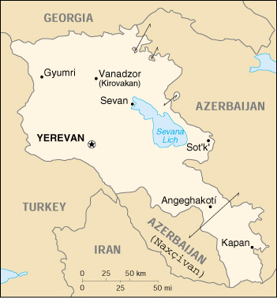

![[Country Flag of Armenia]](../flags/am-lgflag.jpg)
| Armenia |
|
         |  | |
| Introduction |
Background: An Orthodox Christian country, Armenia was incorporated into Russia in 1828 and the USSR in 1920. Armenian leaders remain preoccupied by the long conflict with Azerbaijan over Nagorno-Karabakh, a primarily Armenian-populated exclave, assigned to Soviet Azerbaijan in the 1920s by Moscow. Armenia and Azerbaijan began fighting over the exclave in 1988; the struggle escalated after both countries attained independence from the Soviet Union in 1991. By May 1994, when a cease-fire took hold, Armenian forces held not only Nagorno-Karabakh but also a significant portion of Azerbaijan proper. The economies of both sides have been hurt by their inability to make substantial progress toward a peaceful resolution.
| Geography |
Location: Southwestern Asia, east of Turkey
Geographic coordinates: 40 00 N, 45 00 E
Map references: Commonwealth of Independent States
Area:
total:
29,800 sq km
land:
28,400 sq km
water:
1,400 sq km
Area - comparative: slightly smaller than Maryland
Land boundaries:
total:
1,254 km
border countries:
Azerbaijan-proper 566 km, Azerbaijan-Naxcivan exclave 221 km, Georgia 164 km, Iran 35 km, Turkey 268 km
Coastline: 0 km (landlocked)
Maritime claims: none (landlocked)
Climate: highland continental, hot summers, cold winters
Terrain: Armenian Highland with mountains; little forest land; fast flowing rivers; good soil in Aras River valley
Elevation extremes:
lowest point:
Debed River 400 m
highest point:
Aragats Lerr 4,095 m
Natural resources: small deposits of gold, copper, molybdenum, zinc, alumina
Land use:
arable land:
17%
permanent crops:
3%
permanent pastures:
24%
forests and woodland:
15%
other:
41% (1993 est.)
Irrigated land: 2,870 sq km (1993 est.)
Natural hazards: occasionally severe earthquakes; droughts
Environment - current issues: soil pollution from toxic chemicals such as DDT; energy blockade, the result of conflict with Azerbaijan, has led to deforestation when citizens scavenged for firewood; pollution of Hrazdan (Razdan) and Aras Rivers; the draining of Sevana Lich (Lake Sevan), a result of its use as a source for hydropower, threatens drinking water supplies; restart of Metsamor nuclear power plant without adequate (IAEA-recommended) safety and backup systems
Environment - international agreements:
party to:
Air Pollution, Biodiversity, Climate Change, Desertification, Hazardous Wastes, Nuclear Test Ban, Ozone Layer Protection, Wetlands
signed, but not ratified:
Air Pollution-Persistent Organic Pollutants
Geography - note: landlocked
| People |
Population: 3,344,336 (July 2000 est.)
Age structure:
0-14 years:
24% (male 415,297; female 400,590)
15-64 years:
66% (male 1,084,588; female 1,131,387)
65 years and over:
10% (male 129,890; female 182,584) (2000 est.)
Population growth rate: -0.28% (2000 est.)
Birth rate: 10.97 births/1,000 population (2000 est.)
Death rate: 9.53 deaths/1,000 population (2000 est.)
Net migration rate: -4.23 migrant(s)/1,000 population (2000 est.)
Sex ratio:
at birth:
1.05 male(s)/female
under 15 years:
1.04 male(s)/female
15-64 years:
0.96 male(s)/female
65 years and over:
0.71 male(s)/female
total population:
0.95 male(s)/female (2000 est.)
Infant mortality rate: 41.48 deaths/1,000 live births (2000 est.)
Life expectancy at birth:
total population:
66.4 years
male:
61.98 years
female:
71.04 years (2000 est.)
Total fertility rate: 1.47 children born/woman (2000 est.)
Nationality:
noun:
Armenian(s)
adjective:
Armenian
Ethnic groups:
Armenian 93%, Azeri 3%, Russian 2%, other (mostly Yezidi Kurds) 2% (1989)
note:
as of the end of 1993, virtually all Azeris had emigrated from Armenia
Religions: Armenian Orthodox 94%
Languages: Armenian 96%, Russian 2%, other 2%
Literacy:
definition:
age 15 and over can read and write
total population:
99%
male:
99%
female:
98% (1989 est.)
| Government |
Country name:
conventional long form:
Republic of Armenia
conventional short form:
Armenia
local long form:
Hayastani Hanrapetut'yun
local short form:
Hayastan
former:
Armenian Soviet Socialist Republic; Armenian Republic
Data code: AM
Government type: republic
Capital: Yerevan
Administrative divisions: 10 provinces (marzer, singular - marz) and 1 city* (k'aghak'ner, singular - k'aghak'); Aragatsotn, Ararat, Armavir, Geghark'unik', Kotayk', Lorri, Shirak, Syunik', Tavush, Vayots' Dzor, Yerevan*
Independence: 28 May 1918-2 December 1920 (First Armenian Republic); 23 September 1991 (from Soviet Union)
National holiday: Referendum Day, 21 September
Constitution: adopted by nationwide referendum 5 July 1995
Legal system: based on civil law system
Suffrage: 18 years of age; universal
Executive branch:
chief of state:
President Robert KOCHARIAN (since 30 March 1998)
head of government:
Prime Minister Aram SARKISYAN (since 3 November 1999)
cabinet:
Council of Ministers appointed by the prime minister
elections:
president elected by popular vote for a five-year term; special election last held 30 March 1998 (next to be held NA March 2003); prime minister appointed by the president
election results:
Robert KOCHARIAN elected president; percent of vote - Robert KOCHARIAN 59%, Karen DEMIRCHYAN 41%
Legislative branch:
unicameral National Assembly (Parliament) or Azgayin Zhoghov (131 seats; members serve four-year terms)
elections:
last held 30 May 1999 (next to be held in the spring of 2003)
election results:
percent of vote by party - NA; seats by party - unity bloc 61 (Republican Party 41, People's Party of Armenia 20), Stability Group (independent Armenian deputies who have formed a bloc) 21, ACP 10, independents 10, ARF (Dashnak) 8, Law and Unity Party 7, NDU 6, Law-Governed Party 6, unfilled 2; note - seats by party change frequently
Judicial branch: Supreme Court; Constitutional Court
Political parties and leaders: Armenian Communist Party or ACP [Vladimir DARBINIAN]; Armenian National Movement or ANM [Vano SIRADEGIAN, chairman]; Armenian Revolutionary Federation ("Dashnak" Party) or ARF [Vahan HAVHANNISIAN]; Christian Democratic Union or CDU [Azat ARSHAKYN, chairman]; Democratic Liberal Party [Ramkavar AZATAKAN, chairman]; Free Armenian's Mission [Ruben MNATSANIAN, chairman]; Law and Unity Party [Artashes GEGAMIAN, chairman]; Law-Governed Party [Artur BAGDASARIAN, chairman]; Mission Party [Artush PAPOIAN, chairman]; National Democratic Union or NDU [Vazgen MANUKIAN]; National State Party [Samvel SHAGINIAN]; People's Party of Armenia [Stepan DEMIRCHYAN]; Republican Party [Andranik MARKARYAN]; Shamiram Women's Movement or SWM [Maria NERSISSIAN]; Social Democratic (Hnchakian) Party [Yeghia NACHARIAN]; Stability Group [Vartan AYVAZIAN, chairman]; Union of National Self-Determination or NSDU [Paruir HAIRIKIAN, chairman]
International organization participation: BSEC, CCC, CE (guest), CIS, EAPC, EBRD, ECE, ESCAP, FAO, IAEA, IBRD, ICAO, ICRM, IDA, IFAD, IFC, IFRCS, ILO, IMF, Intelsat, Interpol, IOC, IOM, ISO, ITU, NAM (observer), OPCW, OSCE, PFP, UN, UNCTAD, UNESCO, UNIDO, UPU, WFTU, WHO, WIPO, WMO, WToO, WTrO (applicant)
Diplomatic representation in the US:
chief of mission:
Ambassador Arman KIRAKOSIAN
chancery:
2225 R Street NW, Washington, DC 20008
telephone:
[1] (202) 319-1976
FAX:
[1] (202) 319-2982
consulate(s) general:
Los Angeles
Diplomatic representation from the US:
chief of mission:
Ambassador Michael LEMMON
embassy:
18 General Bagramian Avenue, Yerevan
mailing address:
American Embassy Yerevan, Department of State, Washington, DC 20521-7020
telephone:
[374] (2) 151-551
FAX:
[374] (2) 151-550
Flag description: three equal horizontal bands of red (top), blue, and orange
| Economy |
Economy - overview: Under the old Soviet central planning system, Armenia had developed a modern industrial sector, supplying machine tools, textiles, and other manufactured goods to sister republics in exchange for raw materials and energy. Since the implosion of the USSR in December 1991, Armenia has switched to small-scale agriculture away from the large agroindustrial complexes of the Soviet era. The agricultural sector has long-term needs for more investment and updated technology. The privatization of industry has been at a slower pace, but has been given renewed emphasis by the current administration. Armenia is a food importer, and its mineral deposits (gold, bauxite) are small. The ongoing conflict with Azerbaijan over the ethnic Armenian-dominated region of Nagorno-Karabakh and the breakup of the centrally directed economic system of the former Soviet Union contributed to a severe economic decline in the early 1990s. By 1994, however, the Armenian Government had launched an ambitious IMF-sponsored economic program that has resulted in positive growth rates in 1995-99. Armenia also managed to slash inflation and to privatize most small- and medium-sized enterprises. The chronic energy shortages Armenia suffered in recent years have been largely offset by the energy supplied by one of its nuclear power plants at Metsamor. Continued Russian financial difficulties have hurt the trade sector especially, but have been offset by international aid, domestic restructuring, and foreign direct investment.
GDP: purchasing power parity - $9.9 billion (1999 est.)
GDP - real growth rate: 5% (1999 est.)
GDP - per capita: purchasing power parity - $2,900 (1999 est.)
GDP - composition by sector:
agriculture:
40%
industry:
25%
services:
35% (1999 est.)
Population below poverty line: 45% (1999 est.)
Household income or consumption by percentage share:
lowest 10%:
NA%
highest 10%:
NA%
Inflation rate (consumer prices): 2.5% (1999)
Labor force: 1.5 million (1999)
Labor force - by occupation: agriculture 55%, services 25%, manufacturing, mining, and construction 20% (1999 est.)
Unemployment rate:
20% (1998 est.)
note:
official rate is 9.3% for 1998
Budget:
revenues:
$360 million
expenditures:
$566 million, including capital expenditures of $NA (1999 est.)
Industries: metal-cutting machine tools, forging-pressing machines, electric motors, tires, knitted wear, hosiery, shoes, silk fabric, washing machines, chemicals, trucks, watches, instruments, microelectronics
Industrial production growth rate: -2% (1998)
Electricity - production: 5.764 billion kWh (1998)
Electricity - production by source:
fossil fuel:
48.92%
hydro:
26.44%
nuclear:
24.64%
other:
0% (1998)
Electricity - consumption: 5.361 billion kWh (1998)
Electricity - exports: 0 kWh (1998)
Electricity - imports: 0 kWh (1998)
Agriculture - products: fruit (especially grapes), vegetables; livestock
Exports: $240 million (1999 est.)
Exports - commodities: diamonds, scrap metal, machinery and equipment, cognac, copper ore
Exports - partners: Belgium, Russia, Iran, Turkmenistan, US, Georgia (1998)
Imports: $782 million (1999 est.)
Imports - commodities: natural gas, petroleum, tobacco products, foodstuffs, diamonds
Imports - partners: Russia, US, UK, Iran, Turkey, Belgium (1998)
Debt - external: $862.7 million (1999)
Economic aid - recipient: $245.5 million (1995)
Currency: 1 dram = 100 luma
Exchange rates: dram per US$1 - 527.02 (January 2000), 535.06 (1999), 504.92 (1998), 490.85 (1997), 414.04 (1996), 405.91 (1995)
Fiscal year: calendar year
| Communications |
Telephones - main lines in use: 583,000 (1995)
Telephones - mobile cellular: NA
Telephone system:
system inadequate; now 90% privately owned and undergoing modernization and expansion
domestic:
the majority of subscribers and the most modern equipment are in Yerevan (this includes paging and mobile cellular service)
international:
Yerevan is connected to the Trans-Asia-Europe fiber-optic cable through Iran; additional international service is available by microwave radio relay and landline connections to the other countries of the Commonwealth of Independent States and through the Moscow international switch and by satellite to the rest of the world; satellite earth stations - 1 Intelsat
Radio broadcast stations: AM 9, FM 6, shortwave 1 (1998)
Radios: 850,000 (1997)
Television broadcast stations: 4 (1998)
Televisions: 825,000 (1997)
Internet Service Providers (ISPs): 1 (1999)
| Transportation |
Railways:
total:
825 km in common carrier service; does not include industrial lines
broad gauge:
825 km 1.520-m gauge (825 km electrified) (1995)
Highways:
total:
15,998 km
paved:
15,998 km (including 7,567 km of expressways)
unpaved:
0 km (1998 est.)
Waterways: NA km
Pipelines: natural gas 900 km (1991)
Ports and harbors: none
Airports: 11 (1996 est.)
Airports - with paved runways:
total:
5
over 3,047 m:
2
1,524 to 2,437 m:
1
914 to 1,523 m:
2 (1996 est.)
Airports - with unpaved runways:
total:
6
1,524 to 2,437 m:
2
914 to 1,523 m:
3
under 914 m:
1 (1996 est.)
| Military |
Military branches: Army, Air Force and Air Defense Aviation, Air Defense Force, Security Forces (internal and border troops)
Military manpower - military age: 18 years of age
Military manpower - availability:
males age 15-49:
896,646 (2000 est.)
Military manpower - fit for military service:
males age 15-49:
708,940 (2000 est.)
Military manpower - reaching military age annually:
males:
33,391 (2000 est.)
Military expenditures - dollar figure: $75 million (FY99)
Military expenditures - percent of GDP: 4% (FY99)
| Transnational Issues |
Disputes - international: Armenia supports ethnic Armenians in the Nagorno-Karabakh region of Azerbaijan in the longstanding, separatist conflict against the Azerbaijani Government; traditional demands regarding former Armenian lands in Turkey have subsided
Illicit drugs: illicit cultivator of cannabis mostly for domestic consumption; increasingly used as a transshipment point for illicit drugs - mostly opium and hashish - to Western Europe and the US via Iran, Central Asia, and Russia